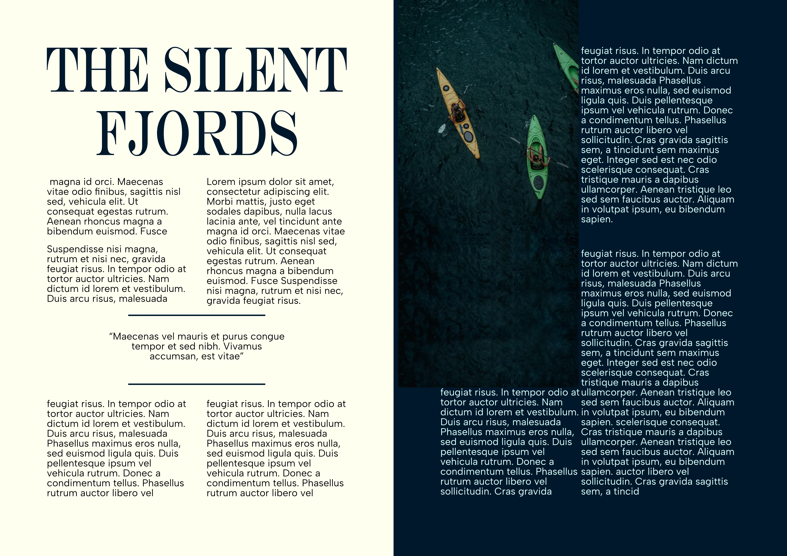
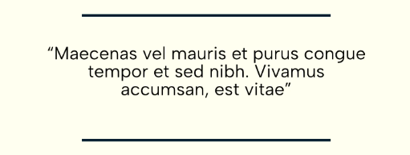
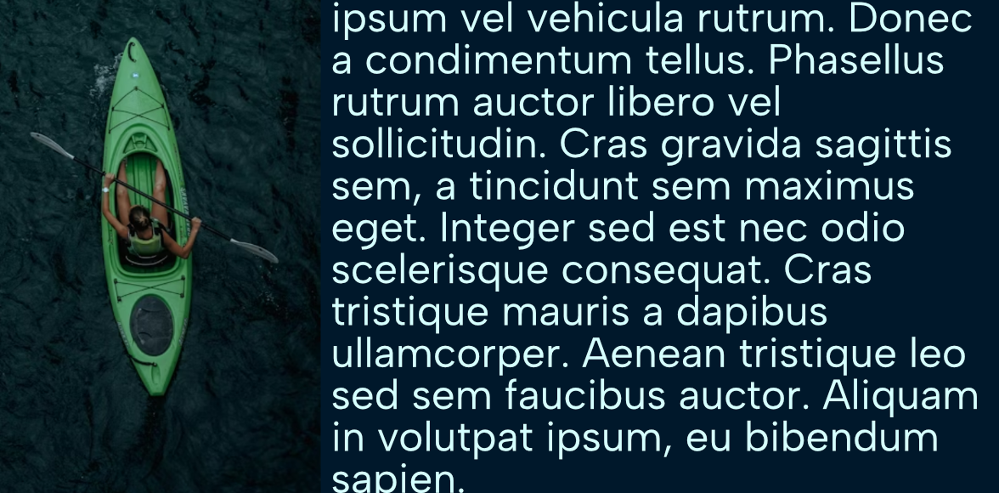

Editorial Layout
Wander/Wild
A double-page magazine spread for "The Silent Fjords."

Project Data
Client
Wander/Wild Magazine
Focus Area
- Baseline Grids
- Typographic Hierarchy
- Gutter & Bleed Management
Software
Affinity Publisher 2
The Brief
Wander/Wild is a boutique lifestyle publication focused on sustainable, off-the-grid tourism. The objective was to design a feature spread for an article titled "The Silent Fjords: A Kayaker's Guide to Norway."
The Execution
To reflect the vast, quiet nature of the Norwegian landscape, I utilized significant negative space and a rigid, multi-column baseline grid. The layout forces the eye to breathe.
Print Considerations: Special attention was paid to the center fold (the gutter). I ensured the striking photography stretched across the spread (with proper bleed margins) while keeping all crucial typography—such as the headline and the pull quote, "Maecenas vel mauris et purus congue..."—safely within the live area.
Color Story
A muted, natural palette pulled directly from the cold waters and rocky cliffs of the Nordic landscape.
Typography
Contrasting a high-contrast elegant serif for the headlines with a highly legible geometric sans-serif for the dense body copy.

